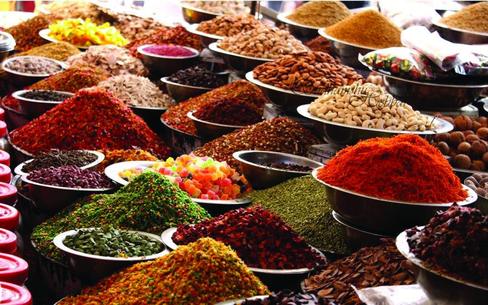

Специи – тайная кладезь природы.

Специи имеют богатую и длинную историю завоевания мира вкусов, ароматов и применения в медицине, кулинарии, ароматерапии, аюрведе и эзотерике.

Особенно много знали о специях жители Индии и Дальнего Востока, которые употребляли их, придавая простым блюдам тонкий аромат и приятный вкус. Черный перец, корица, имбирь, куркума и кардамон – первые приправы, получившие широкое распространение в Индии.
О специях знали много в Древнем Египте – об этом говорят записи на папирусах, где писалось подробно о свойствах этих продуктов и их применении в кулинарии, медицине и косметологии.
В древних трактатах Китая указывается, как использовались бутоны гвоздики в качестве освежающего средства перед тем, как попасть на аудиенцию к императору.
Аюрведическая медицина в своей основе использовала для лечения различные природные компоненты, включая специи.
Целебные свойства этих продуктов предопределили интерес к местам их обитания. Приблизительно в 2000 г. до н. э. активизировалась торговля по всему миру, начиная с Ближнего Востока, когда корица и перец стали доставляться в Европу.
Более 5 тысяч лет до н. э., когда наладилась торговля между странами Ближнего Востока и Средиземноморской частью Европы, рынок специй находился под влиянием арабов. Продавая их Римской империи, затем торговцы распространяли продукты по всему Средиземноморью. При этом цена на специи увеличивалась в разы от их первоначальной стоимости.
Основными центрами торговли были Багдад и Басра, но с падением Римской империи рынок специй стал подвергаться переделу и различным религиозным запретам со стороны католической церкви. В конце концов, Венеция, Генуя и Пиза выторговали для себя статус новой морской державы, и торговля специями вновь приобрела свою мощь.
Путешественник Марко Поло развеял ранее созданные мифы арабов, что на караванном пути встречаются различные змеи, кишащие в своем изобилии, или о чудовищах, оберегающих специи. Его рассказы о том, что на островах свободно растет перец, мускатный орех, гвоздика и другие полезные растения, сподвигли многих мореплавателей снарядить корабли и отправиться в путешествие за чудодейственными, ароматными продуктами. А Венеция тем временем продолжала торговлю специями, став самым богатым городом Европы.
Открытие ближайшего пути до Индии Васко да Гама позволило наладить торговые отношения между Португалией и Индией и перехватить первенство в торговле специями Лиссабону.
За владение рынком специй велись настоящие войны, страдало островное население, которому колонизаторы запрещали разводить эти растения в собственных целях. Появление молодых побегов на острове вызывало беспокойство у них и разбирательство с местным населением, пока не выяснили, что птицы являются разносчиками семян той либо иной специи.
Таким образом, в то время сферы влияния были поделены между арабами, Венецией и Лиссабоном. А позже, когда Колумб открыл Новый Свет, в Европу стали завозиться перец чили, душистый перец, ваниль, столицей специй стала Голландия. Ее двухсотлетняя война с Англией завершилась спадом цен на специи, и Америка на какой-то период стала лидером в этой области.
В настоящее время основными рынками специй являются Лондон, Гамбург, Роттердам, Сингапур и Нью-Йорк.
Богатая история приправ предопределила влияние на развитие культуры национальных кухонь различных стран, их переплетение и разнообразие.
В настоящее время невозможно представить ни одну кухню мира без специй. Они определяют вкус блюд, их цвет и тонкий шлейф аромата.
Многие пряности обладают способностью влиять на вкусовые качества продукта, делать их мягче, или более нежными, или хрустящими. Ваниль и бергамот обогащают продукт ароматом, не меняя вкуса и консистенции. Бадьян, например, не позволяет засахариваться варенью.
Специи богаты витаминами, минеральными солями, эфирными маслами, ферментами, белками, обогащают ими пищу и сообщают продукту лечебные свойства.
Открывая тайны специй, мы находим ключ к своему здоровью.
Приправы подавляют рост и развитие болезнетворных микробов, активизируют вывод шлаков и токсичных веществ из организма, укрепляют иммунную систему, омолаживают и оздоравливают органы человека на клеточном уровне, наполняют организм энергией силы, свежести и бодрости.
Применение специй в косметологии раскрывает более полно их свойства и использование. Так, например, черный перец с солью рекомендуется использовать для укрепления и улучшения состояния десен. Такой смесью нужно делать их массаж после чистки зубов. Перец улучшит кровообращение, а соль очистит, укрепит и снимет воспаления.
Широкое применение в косметологии получила куркума. Она является сильнейшим антиоксидантом, хорошо убирает угри и покраснения на коже, очищает ее.
Имбирь обладает сильнейшим антисептическим действием, устраняет вялость и утомляемость кожи, омолаживает, тонизирует, восстанавливает и стимулирует ее клетки.
Хорошо на волосы влияет ваниль. Маска с добавлением этой пряности со временем делает их густыми, блестящими и шелковистыми благодаря тому, что способна отлично увлажнять кожу головы.
Чтобы оздоровить и улучшить состояние волос, используют отвар из пажитника. В качестве компрессов и припарок его измельченные семена используются для лечения различных кожных болезней – экзем, гнойных ран, фурункулов, а также перхоти и бородавок.
Положительно влияет на кожу мускатный орех. Он омолаживает ее, стимулирует регенерацию тканей, замечательно подойдет для ухода за увядшей, постаревшей, морщинистой кожей. Хорошо борется с грибковыми инфекциями, чесоткой и лишаями. Добавляется в незначительных количествах, так как обладает раздражающим эффектом.
О специях можно писать много, истории интересные и увлекательные. Поэтому настал час каждой из них уделить немного больше внимания.
Итак, перевернем страницу…